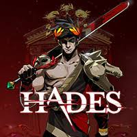
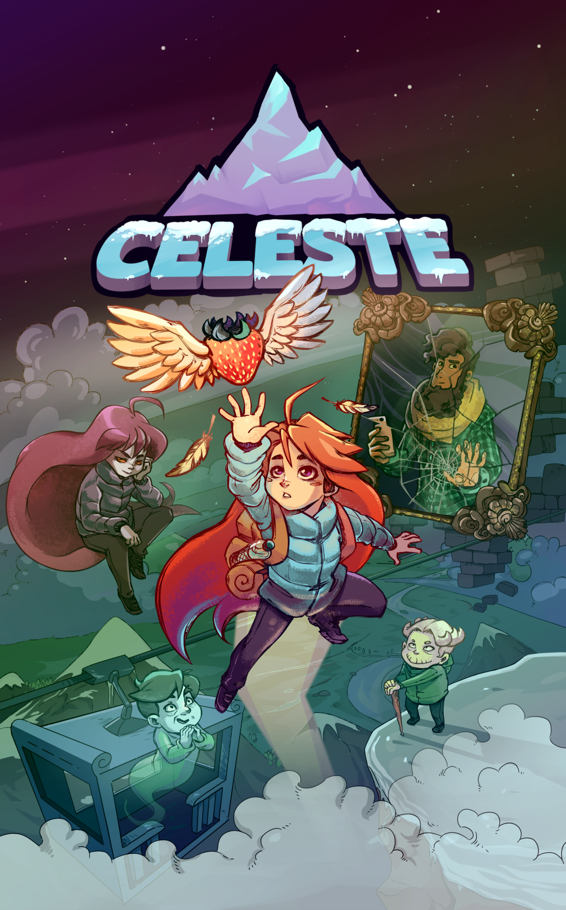
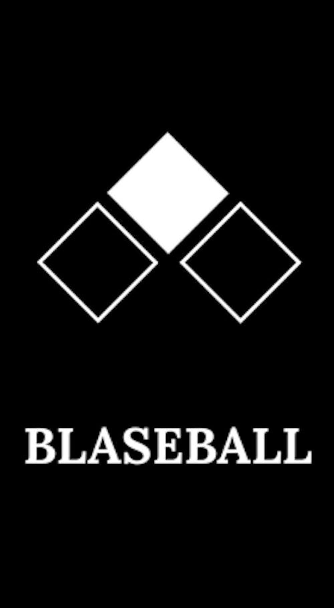

Major spoilers for Hollow Knight, Hades, and Celeste
Hades

Hades, Released in late 2018, is a rogue-like game based around the greek god Zagreus. Throughout the game, you interact with various greek gods. Zagreus may "Romance" (ie: date them) both a male (Patroclus) and a female (Megaera). Zagreus does not specifically state that he is bisexual, but through being able to have a relationship with both a male character and a female character it can be stated that he is Bisexual. Not only does he date both am ale and a female, but Zagreus is able to romance both of them at once without any conflict, infact the only conflict that comes out of this is Megaera saying a witty comment if you start dating Patroclus before Megaera.
You can also hit on Achilles, although he does reject you. That is beacuse there is also the relationship between Achilles and Patroclus, which were seperated in the underworld (where the game takes place). Although this is true, into the late-game stage of Hades, you can reunite the two lovers. Again, although not clearly stated that this is a romantic relationship in the game, the characters have a relationship between eachother, making it a Queer relationship at least.
- Confirmed Queer Relationship(s)
- LGBTQ+ Main Character
- Multiple LGBTQ+ representations
- Optional Side-Choices for the representation (Not Commiting to the idea of having a queer relationship in the game)
Overall I think that Hades should be celebrated for their Queer characters by the LGBTQ+ Community. I think this beacuse the representation in the game is positive and doesnt play into too many tropes (Its also based upon the stories of the greek gods)
Hollow Knight

Hollow Knight, Released early 2017, is a metroidvania. The game of hollow knight tells the story of the pale king, the pure vessel, the knight (or the vessel), and radiance. In the story there is a character called the Nailsmith where you can upgrade your Nail (the weapon throughout the game). Once you get every single upgrade for the Nail, the nailsmith talks about their "Fate" being completed and asks you to strike him down with his perfected nail, as he stands at a cliff. You do have the option to, however if you choose not to, later in the game you can find him in a gay relationship with the artist you find later in the game named "Sheo" who was previously a fighter, and a master of the nail. You can find Sheo painting the Nailsmith, in Sheo's house. The game developers have confirmed the fact that its a canonically gay relationship between them.
Another good point of LGBTQ+ representation in the game is that the main character, Known as The Knight, is referred to only with they/it pronouns throughout the entire game, and is again confirmed to be non-binary according to Team cherry (Game developers of Hollow Knight)
- Confirmed Queer Relationship(s)
- Confirmed Non-binary character(s)
- Multiple LGBTQ+ representations
- LGBTQ+ Main Character
- Optional Side-Choices for the representation (Not Commiting to the idea of having a queer relationship in the game)
- "Queer Character Dies" trope (see: Nailsmith)
- Easy to miss
Overall I think that while Hollow Knight does contain Queer Characters and Non-binary characters, it has many issues (queer character dies trope & the fact that the "Non-Binary" representation can be written off as just it being a bug (as in, the creature)) and I think that it shouls still be celebrated, but its signifigantly easier to write off from a homophobic point of view then some of the other games here.
Celeste
Celeste is a platformer game about the main character, Madeline, climbing a mountain trying to overcome her emotions, anxiety, and self-worth. Throughout the story of Celeste you learn more and more about the character you are playing as, through cutscenes and dialogue. Towards the latter half of the game, there is a scene in which it shows a younger version of the main character, with shorter hair and wearing more male-leaning clothing. Through a post-game update, another chapter was updated, with the ending cutscene having both a pill bottle (which the community theorized are either HRT or anxiety pills) along side a transgender flag and a LGBTQ+ flag. Alongside this, the creator, Maddy Thorson, came out as transgender a couple years after the game was released.
- Confirmed Transgender character(s)
- Major part of the storyline
- Not explicitly told until the very final moments of the game
Overall, I think celeste is pretty good representation, not just for the Transgender community, but more for an accurate representation anxiety & depression. One of the biggest issues I see with the representation for the queer community however, is that its confirmed at the end of post-game content. Basically as far away from the start as possible. This will make it harder to access overall, aswell as spoilers to the game iteself.
BLASEBALL
Blaseball, As a game, Isn't a game. It's a game that used to play 12 simulations of baseball, hourly. The game creators, The Game Band, created the game to be based aroudn the community. At first they did this through weekly "Elections" where the fans (people who visited the website) got to vote on game changing choices in the game, effecting what the players (characters on teams on the website, represented simply by a full name and stats.) would happen to them. Later on though, they had noticed members of the community creating designs & lore for the players and the teams. Eventually the teams and players seperated from the game itself, becoming their own characters with songs written about them (The Garages), hundreds of pages of lore about them, relationships with other players on other teams, and art of the character. Beacuse of the fact that all of the characters were created by the fans and not the game developers (not even the names were created by the game developers, the entire character was created by randomization (The Sim, as it was called by the fans.)) Beacuse of the fact that all the lore was written and curated by the fans, and not the owners of the game, almost all of the chracters were representation in some way. This included queer groups, disabled groups, colored groups, all of them. Any character could be whoever you wanted as a fan, as the game only gave you a name, stats, and a team, along with any events that happened to them through out the game.
- Representation by the fans, for the fans
- Fan-Fiction supported directly by developers
- No solid (full) representation in the game
Overall, I think blaseball in of itself, isn't great at representation. But beacuse the fans of the game became the writors, it made it so most characters in Blaseball are representation for a group (or two, or three). Although the fans being the creators and writers for the characters, its also a downside. this is beacuse while one persons thoughts about a specific character or team could be that they are queer, anothers could be that they are straight. This could cause backlash in the community if it was a bad group, although this appears to be (or have been) quite rare in the community, as it tends to pull in people who can relate with the fan-made "Players" and "Teams", and the groups hosted by those in the community tend to have strong rulse about not including people.